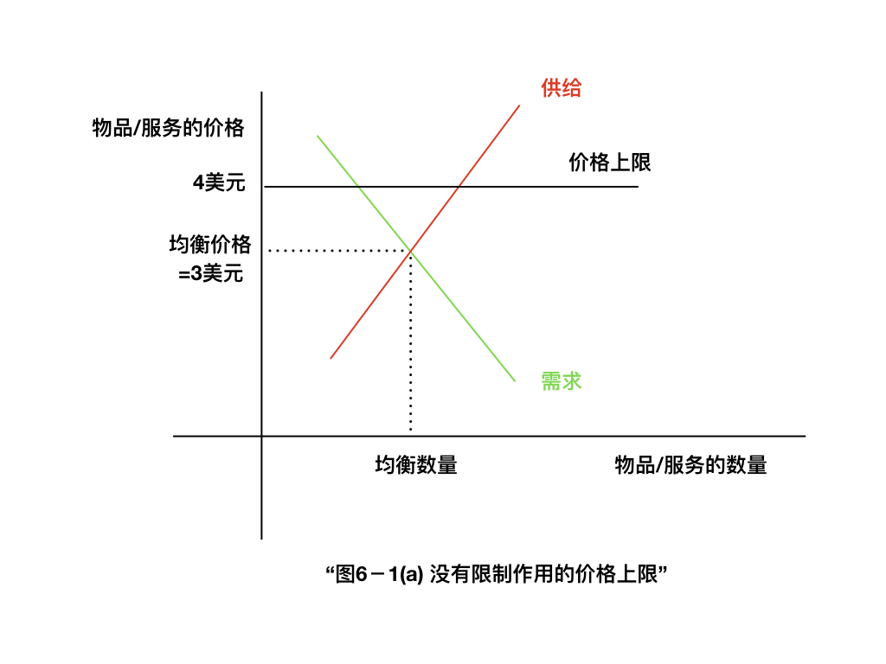

Fibonacci数列通项公式
这几天在家做了Fibonacci火锅,
今天的火锅汤=昨天的火锅汤+前天的火锅汤. 对了, 剩下的火锅汤还可以做成浓汤宝, 大火收汁差不多以后倒入冰盒中冷藏或冷冻即可.
于是突然想起来以前学过如何求Fibonacci数列的通项公式. 很华丽的. 不记下来可惜了. 先当作是LaTeX和sympy的练习吧
见微知著: Magic Leap为什么会失败
Magic Leap取得了大量投资以建立基于光纤扫描的数字光场技术. 试图利用该技术解决调节集合反射的问题.
经过6年的研发, Magic Leap自称将于2018年推出实体产品 Magic Leap One

但是, 根据magic leap于6 Apr 2016发布的一条twitter:
"When you start building tech with the body in mind, magical things happen. Step one: study the eye."

图中大量的参数标注是错误的! 这样粗心或无知的公司不可能按照预期将高质量的产品投放市场上. 投资人对数字光场技术的期望必将收到严重打击, 并将积极寻找替代技术.
那么, 正确的眼球光学参数应当是怎样的?
眼科科普索引贴
机器学习的知识产权保护(2)--侵权检测
如何写一个球面Ray tracing程序(1)
如何写一个球面Ray tracing程序(0)
2017年我差不多把python学会了, 还是挺有成就感的. 这个项目是我刚开始重新学习python的时候做的, 现在看起来有些代码需要再修改一下. 所以重新拿出来写一遍.
Ray tracing, 就是光路追迹或者叫光线追踪, 就是跟随一根光线, 看它依次与透镜组的哪些面相交, 怎样折射/反射, 最终落在成像屏幕的什么位置.
球面镜的Ray tracing是比较简单的, 直线与平面, 直线与球面的交点就可以写出解析解, 因此求解速度也很快. 球面镜也是很常用的, 毕竟球面镜头便宜. 在自己做的一些项目中, 还是很可能用到球面镜的.
所以写一个球面镜的ray tracing程序还是有一些实用价值的.
字符替换练习
这是一个python正则表达式的练习:
我恰好读到曼昆经济学原理中的一小段, 觉得用来练习正则表达式中的文本替换命令很有意思.
In [1]:
content0='''
价格上限如何影响市场结果
...对冰激凌市场实行价格上限时，可能有两种结果。
'''

In [2]:
content1='''
在图6－l（a）幅中，政府实行每个冰激凌蛋卷为4美元的价格上限。
在这种情况下，由于使供求平衡的价格（3美元）低于上限，
价格上限没有限制作用。
市场力量自然而然地使经济向均衡变动，而且，价格上限没有影响。
'''

In [3]:
content2='''
图6－l0(b)幅表示另一种结果，这种结果更令人感兴趣，也更可能。
在这种情况下，政府实行每个冰激凌蛋卷2美元的价格上限。
由于均衡价格3美元在价格上限之上，所以，价格上限对市场有一种限制性约束。
供求力量趋向于使价格向均衡变动，但当市场价格达到上限时，就不能再上升了。
因此，市场价格等于价格上限。
在这种价格时，冰激凌的需求量（图中的125个）超过了供给量（75个）。
存在冰激凌短缺，因此，一些在现行价格时想买冰激凌的人买不到。
'''
双人游戏的必胜招
该篇复习于2011年. 今天看到如月中天提到"胜也罢，败也罢，就是不要同他讲和！", 不知怎么, 突然想起这个双人游戏是可能有必胜招的, 还有一个华丽的证明, 然后自己又不记得了. 赶紧搜索了一下, 发现以前记录过.
生活中的定量
"能度量方是合理, 合理性才能存在"-- 张系国《超人列传》
生活中度量的意义在于使事情可重复. 可重复的才是可控制和可改进的. 可改进则可以达到当前条件下的最优化, 一旦找到最优解就不需要再动脑子了, 除非环境条件发生变化. 省心.